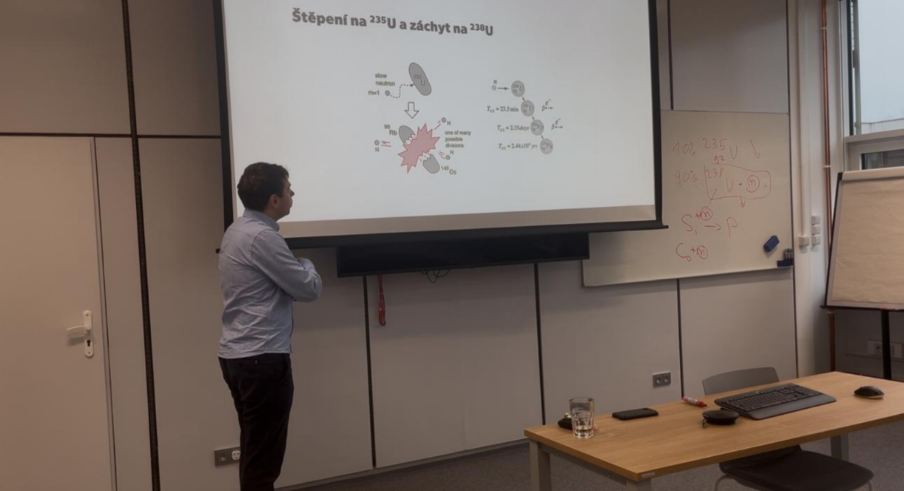
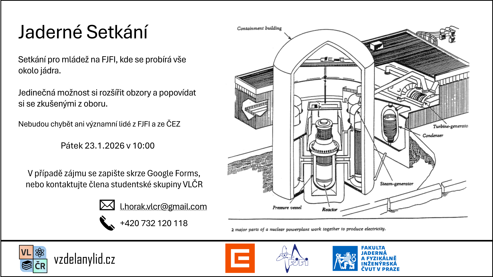

Jaderné setkání
03. 02. 2026
Studentská iniciativa VLČR zorganizovala Jaderné setkání, které proběhlo v pátek 23. 1. 2026 na Katedře jaderných reaktorů FJFI ČVUT v Praze. Akce se zúčastnili žáci základních a středních škol ve věku 13 až 17 let, které spojoval zájem o fyziku a jadernou energetiku. Atmosféra byla velmi přátelská a zvídavá a účastníci měli možnost nahlédnout do prostředí skutečné jaderné fakulty, včetně cvičebního modelu ovládacího panelu reaktoru APR1000, který katedra získala od korejské společnosti KHNP.
Setkání ukázalo, že roste nová generace studentů, která se nebojí jít „k jádru věcí“ a aktivně vyhledává znalosti nad rámec školní výuky. Právě díky podobným aktivitám vzniká komunita mladých lidí napříč školami, kteří sdílejí zájem o fyziku, energetiku a technické obory a navzájem se inspirují. Jak uvedl Josef Kaňkovský ze skupiny ČEZ: „Je vidět, že ten zájem o techniku vzniká už hodně brzy a tyhle aktivity tomu hodně pomáhají. Přesně takhle nějak si představuju, jak by měla vypadat cesta k technickým oborům.“
Velké poděkování patří partnerům z ČEZ, a.s. a FJFI ČVUT, bez jejichž podpory by realizace takové akce nebyla možná. „Toto je další úspěch naší studentské skupiny. Jsem velmi rád, že se tyto akce konají čím dál častěji. Nutno dodat, že by to nešlo bez našich profesionálních partnerů z ČEZ a.s. a FJFI,“ dodává zakládající člen VLČR Lukáš Horák.



